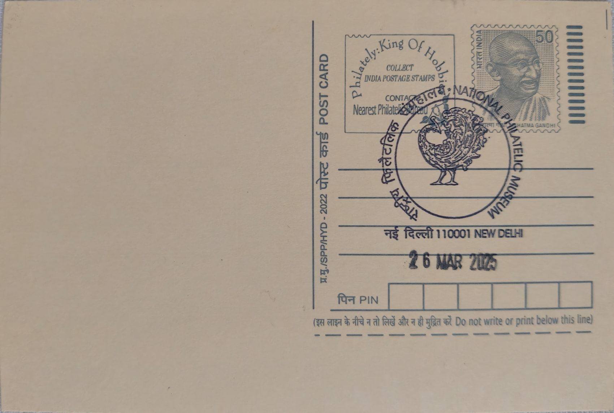

Peacock (Philately Logo)
मोर (डाक-टिकट संग्रह प्रतीक)


The peacock (Pavo cristatus) carries no single founding legend of its own as a philatelic symbol, but its selection as the visual emblem of Indian stamp collecting draws on a longer naming history: the bird was formally declared India's national bird on 1 February 1963 by the Indian Board for Wildlife, chosen over contenders such as the great Indian bustard for being widely distributed, unmistakably distinctive, and deeply woven into subcontinental art and myth. That national status, arrived at only sixteen years after independence, gave the peacock a ready-made identity strong enough for postal authorities to later borrow when they needed a single figure to represent the character of Indian philately itself.
As the adopted emblem of Indian philately, the peacock occupies a category distinct from religious or architectural subjects on this circuit of pictorial cancellations: it is a national-symbol motif pressed into institutional service, appearing on the insignia of the National Philatelic Museum and on materials issued by the Department of Posts' philatelic wing. Its significance is twofold, ecological and cultural on one hand, administrative on the other, since the same bird that signals the onset of the monsoon in Indian folklore and appears in the iconography of Krishna and Kartikeya was repurposed as a mark of institutional identity for the agency entrusted with preserving the country's stamp heritage, linking natural symbolism to postal bureaucracy in a way few other national emblems achieve.
The Indian peacock is a large, sexually dimorphic pheasant in which the male displays iridescent blue-green plumage and an elongated train of upper tail-covert feathers, often exceeding a metre in length, spread into a fan during courtship display and studded with eyespot ocelli. It is this train, rather than the comparatively subdued brown plumage of the peahen, that recurring stamp and logo designs isolate for visual effect. The National Philatelic Museum, housed on the ground floor of Dak Bhawan on Sansad Marg near Connaught Place, was established by the Department of Posts in 1968 to preserve India's philatelic record, including the country's first adhesive stamp, the Scinde Dawk of 1852, and it is this institution's premises and signage that carry the peacock emblem into everyday postal use.
A specific instance of the motif reaching collectors directly came with the stamps and cancellations issued around INDIPEX-73, the international philatelic exhibition held in New Delhi in 1973, where peacock imagery featured on commemorative material alongside other national symbols; peacock designs have recurred since on wildlife-themed definitive and commemorative issues, including entries in India's wildlife preservation series. The pictorial cancellation used at the National Philatelic Museum counter continues this practice at the level of a single post office, giving collectors a bird whose selection as national bird and whose parallel adoption as a philatelic mark were separated by years but converge in the cancellation die applied to mail franked there.
The museum itself underwent a redevelopment completed in 2011 that added an amphitheatre for talks and demonstrations, a reference library, and a working corner where artists design stamps in view of visitors, alongside its permanent thematic galleries on Mahatma Gandhi, science and technology, and flora and fauna. It remains open free of charge to the public on weekdays under Department of Posts administration, and the peacock cancellation obtainable at its counter is sought by collectors less for the bird's ecological interest than for the specific combination of subject and office, tying a national emblem to the one postal counter most concerned with documenting India's stamp history.
| Date of Introduction | July 4, 2024 |
|---|---|
| Address | Postmaster, |
| National Philatelic Museum, | |
| Central Delhi (dt.), New Delhi - 110001. |